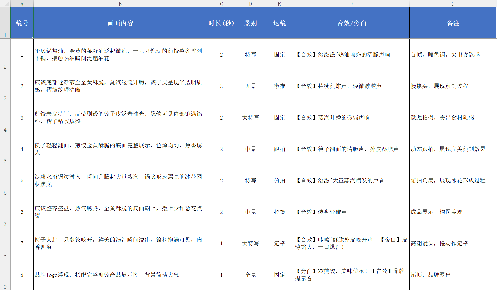
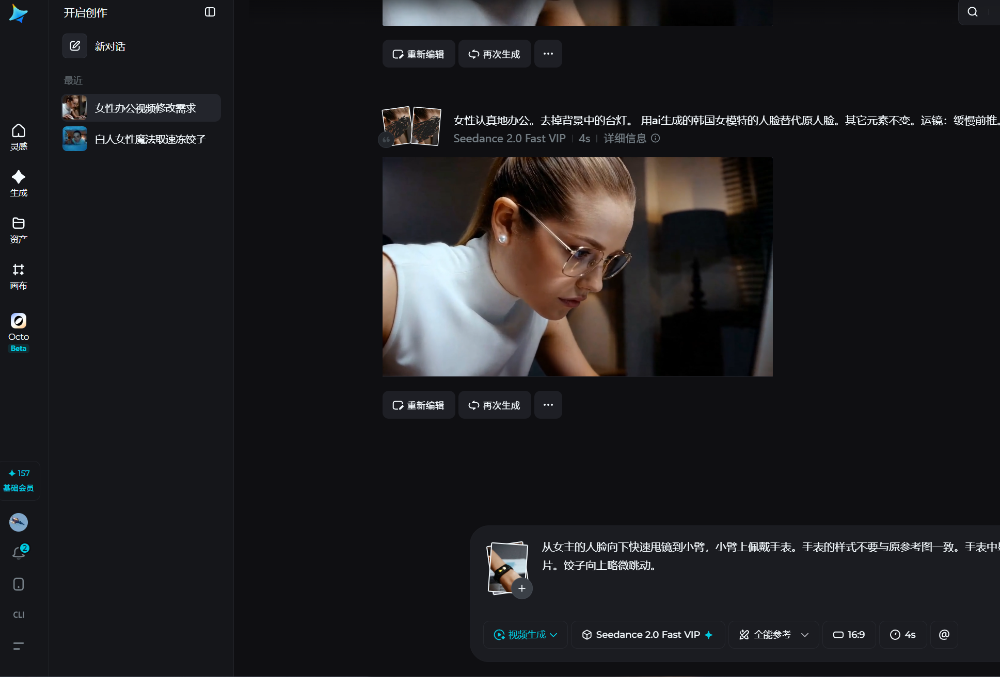

视频剪辑 · 视听语言 · AI辅助创作
PROJECT 01 / COMMERCIAL STUDY
我在“新片场”搜索优秀TVC作品，用免费可商用素材替换原素材，规避了版权问题，把1分钟的原作精简为15秒，临摹出了自己的首支TVC。
在短时间内保留产品呈现、食欲氛围和品牌感，训练TVC叙事的压缩能力。
使用免费可商用素材完成二次创作，在版权安全的前提下复现原片结构。
PROJECT 02 / EVENT HIGHLIGHTS
在3个机位、100分钟、11G大小的原素材中，我精准筛选了有价值片段，形成了1分钟的高光混剪。
从大量素材中挑出有情绪、有动作、有信息的关键片段，压缩出现场高光。
用剪辑节奏把活动现场的热烈感集中呈现，让观众快速进入情绪。
PROJECT 03 / AUDIOVISUAL ANALYSIS
我掌握基础的视听语言要素分析能力，能够精准识别【景别、运镜、转场、镜头角度】等视听语言要素。
围绕景别、运镜、角度和转场识别画面表达，训练对影视表达的判断力。
把观察结果整理成观众能理解的内容，让分析不只是术语堆砌。
我会使用AI协助生成分镜脚本、少数素材，规避版权争议。但创作的主导始终是我本人。
用AI提高前期整理效率，包括分镜脚本、画面描述和素材思路。
最终选题、剪辑判断、节奏控制和作品表达仍由我本人完成。

